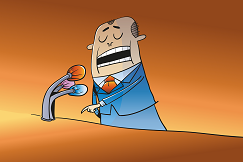
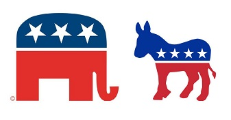

Dans un monde où divers problèmes publics font surface et créés des conflits, la France sous la Vᵉ République, comme plusieurs autres pays, a mis en place un gouvernement démocratique. Autrement dit, un gouvernement dans lequel la souveraineté appartient au peuple. En France, cette démocratie est régie par l'article 3 de la constitution du 4 octobre 1958 qui dit : " la souveraineté nationale appartient au peuple qui l'exerce par ses représentants". En d'autres termes, le peuple doit avoir des représentants pour exercer sa souveraineté. C'est dans cette optique que nous chercherons à savoir si les partis politique ont un rôle important dans la démocratie française.
Le rôle essentiel des partis politiques est de participer à l’animation de la vie politique. L’article 4 de la Constitution dispose : "Les partis et groupements politiques concourent à l’expression du suffrage". De manière plus précise, les partis remplissent deux fonctions : - Ils sont les intermédiaires entre le peuple et le gouvernement. Le parti élabore un programme présentant ses propositions qui, s’il remporte les élections, seront reprises dans le projet du gouvernement. - Ils ont aussi une fonction de direction. Ils ont pour objectif la conquête et l’exercice du pouvoir afin de mettre en œuvre la politique annoncée. politique annoncée. Ils légitiment et stabilisent le régime démocratique, en le faisant fonctionner. Animateurs du débat politique, ils contribuent aussi à structurer l’opinion publique
Il y a des différences concernant les partis politiques entre la France et les autres démocraties dans le monde.  En effet, on peut comparer avec les Etats-Unis, où il existe aujourd'hui deux principaux partis politiques : le Parti démocrate (Democratic Party) et le Parti républicain (Republican Party), de plus que plusieurs partis mineurs ; alors qu’en France, on peut compter une vingtaine de partis politiques plus importants.